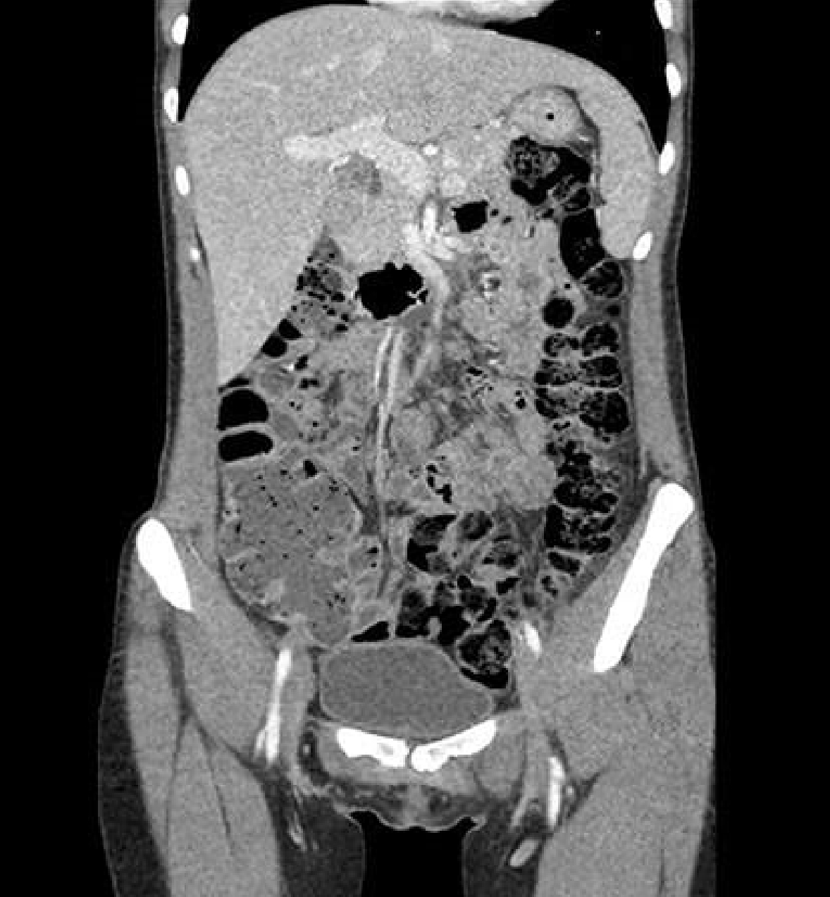
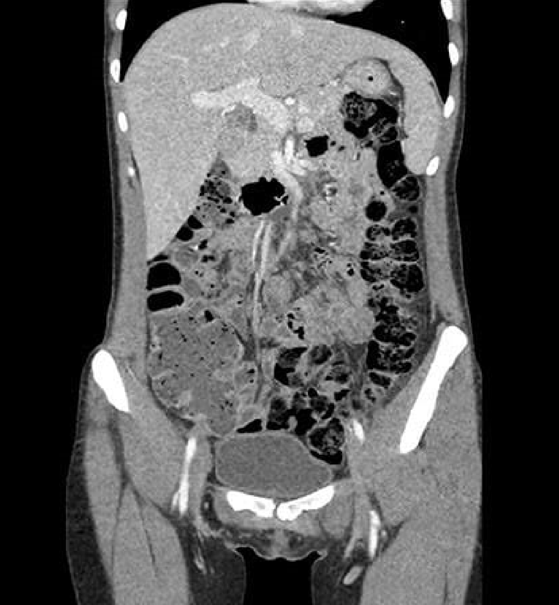
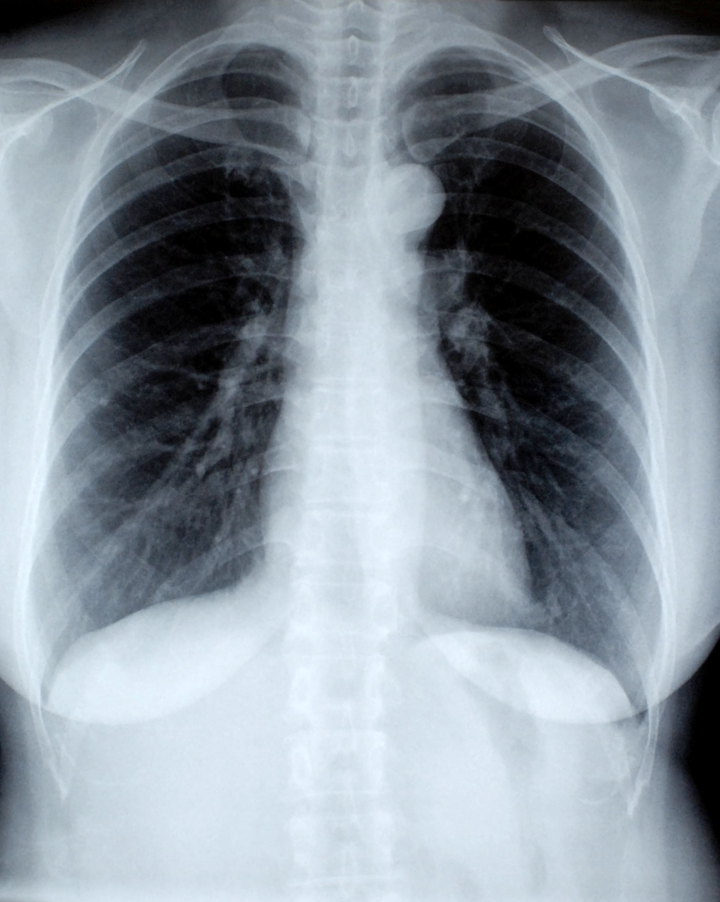
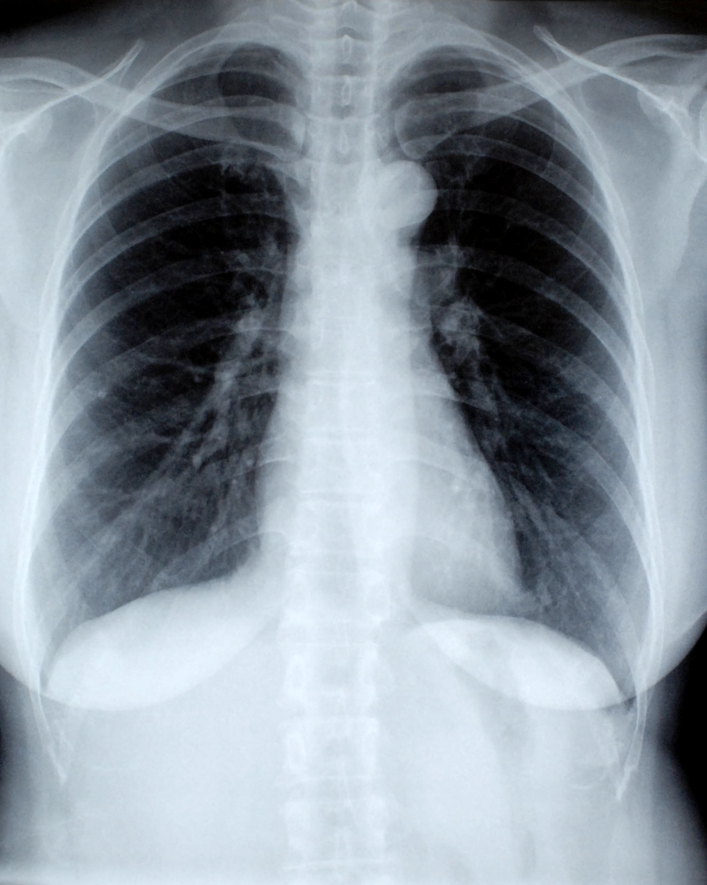

Una radiografía es una prueba rápida e
indolora que genera imágenes de las estructuras
internas del cuerpo, en especial de los huesos.
Los haces de rayos X pasan a través del cuerpo y se
absorben en diferentes cantidades según la densidad
del material a través del cual pasan. Los materiales
densos, como huesos y metales, aparecen de color blanc
o en las radiografías. El aire en los pulmones aparece
de color negro. La grasa y los músculos aparecen como
sombras de color gris.
Una tomografía computarizada combina una
serie de radiografías que se toman desde diferentes
ángulos alrededor del cuerpo y utiliza el procesamiento
informático para crear imágenes (o cortes) transversales
de los huesos, vasos sanguíneos y tejidos blandos que hay
en el cuerpo. Las imágenes de la tomografía computarizada
proporcionan información más detallada que las de las
radiografías convencionales.
Las imágenes por resonancia magnética son
una técnica de obtención de imágenes médicas que utilizan
un campo magnético y ondas de radio generadas por
computadora para crear imágenes detalladas de los órganos
y de los tejidos del cuerpo.
La mayoría de los
aparatos de resonancia magnética son grandes imanes con
forma de tubo. Cuando te recuestas dentro de un aparato de
resonancia magnética, el campo magnético realinea
temporalmente las moléculas de agua en tu cuerpo. Las ondas
de radio hacen que los átomos alineados produzcan señales
muy débiles, que se usan para crear imágenes transversales.
.jpg)
.jpg)
.jpg) 


.png) 

.png)
.png)